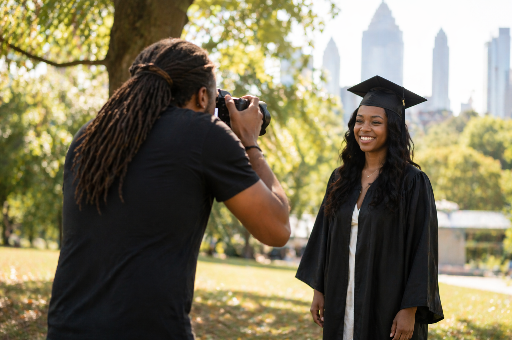

Graduation season in Atlanta hits differently. Between the family group chats blowing up, the coordinating of who's coming from out of town, and the scramble to find the perfect outfit, booking a photographer can feel like one more thing on an already long list.
But it does not have to be. If you have never booked a professional graduation session before, this is your straightforward guide to what the process actually looks like, from the first inquiry to the moment you have your photos in hand.
Why a Dedicated Graduation Session Is Worth It
Graduation ceremony photos are great for the memory books. But let's be honest: those wide-angle gym shots and the quick handshake snap do not capture you. They capture the event.
A dedicated graduation session is about capturing you, your personality, your style, and this specific chapter of your life. Whether you are finishing high school, walking across a college stage, or completing a graduate degree, these photos become some of the most-referenced images in your life. They end up framed in living rooms, on holiday cards, on social media, and in office lobbies. They deserve to be done right.
Atlanta and the surrounding areas, including Stonecrest, Decatur, Stone Mountain, and the broader DeKalb County area, have some genuinely beautiful spots for outdoor sessions. That is one of the quiet advantages of working with a local, on-location photographer. Someone who knows the area knows how to make the most of it.
How the Booking Process Works
Step 1: Reach Out Early
Graduation season is short and busy. Most photographers in the Atlanta metro area start filling up in March and April, with May being the busiest month by far. If your ceremony is in May or June, the earlier you reach out, the better your options for dates, times, and locations.
When you contact a photographer, expect to answer a few simple questions. What is your graduation date? Are you looking for an outdoor or on-location session? How many people will be in the photos: just you, or family too?
Step 2: Choose Your Package
Graduation photography packages usually vary by session length and how many edited images you receive. At Media Circle, graduation packages range from $350 to $1,050 depending on how much time, direction, and coverage you want. Some graduates want a quick session with a few strong images. Others want more time, multiple locations, and a fuller gallery. Neither approach is wrong. It just depends on what you want out of the session.
If you are also planning a graduation party or family gathering, it is worth thinking about whether you want any of that covered too. Many families end up wanting both the portrait session and photos from the celebration itself.
Step 3: Plan the Details
Once you are booked, you should have a short planning conversation about location, timing, and what to wear. Golden hour before sunset is almost always a strong choice in Atlanta. A good photographer should guide you here. You should not have to figure everything out alone.
What Happens During the Session

Most graduation sessions in Atlanta run anywhere from 30 minutes to a couple of hours depending on the package. A typical flow usually looks like this:
- Arrive and get comfortable. The first few minutes are usually just settling in. Good photographers know that most people are not models, and a big part of the job is helping you feel relaxed enough to actually look like yourself.
- Individual portraits first. These are the cap and gown shots, the serious ones, the candid ones, and the ones with a little more personality. Your photographer should guide you through this without making it feel stiff.
- Family and group photos. If you are bringing people along, this usually comes after individual shots so you have more flexibility with timing.
- A second outfit or location, if your package includes it. Longer sessions often make room for a casual outfit change or a second location that shows more of your personality outside the gown.
The goal is not to manufacture perfect poses. It is to create photos that feel natural, polished, and unmistakably you.
What Comes After the Session
After the session, your photographer goes through the images, selects the strongest ones, and edits them for delivery. Turnaround time varies, but one to three weeks is typical during peak graduation season. If you need photos by a certain date for announcements, prints, or party materials, say that up front.
Most clients receive their images through an online gallery with download options in multiple sizes, including high-resolution files for printing and web-ready versions for sharing.
A Few Things People Often Overlook
- Book before the ceremony, not after. Post-ceremony sessions can work, but pre-ceremony usually gives you more flexibility with timing, location, and energy.
- Bring more outfit options than you think you need. It is always easier to narrow things down on site than to wish you had brought something else.
- Communicate what you actually want. If you love a certain style of image, whether bright, candid, dramatic, or clean and editorial, share that ahead of time.
- Do not forget the details. The tassel, the diploma cover, the stole, a letterman jacket, or a meaningful prop often end up becoming some of the favorite images from the session.